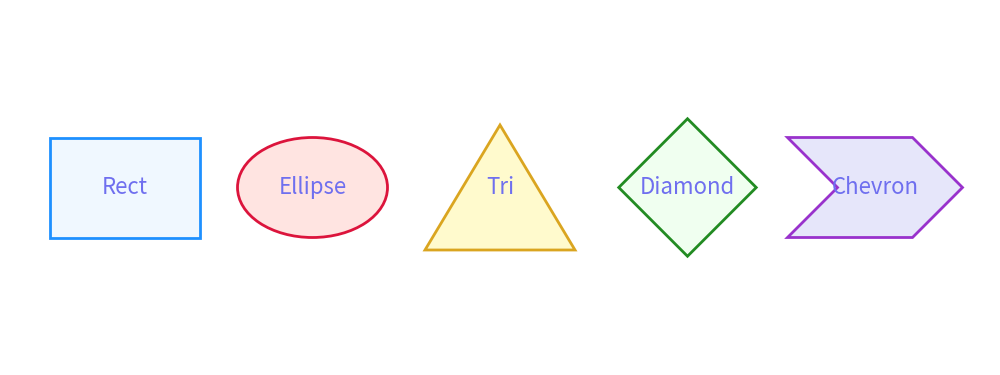
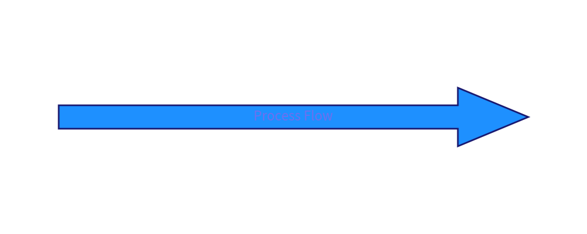
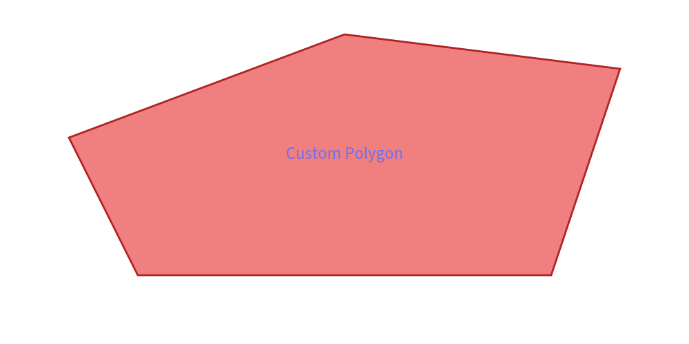
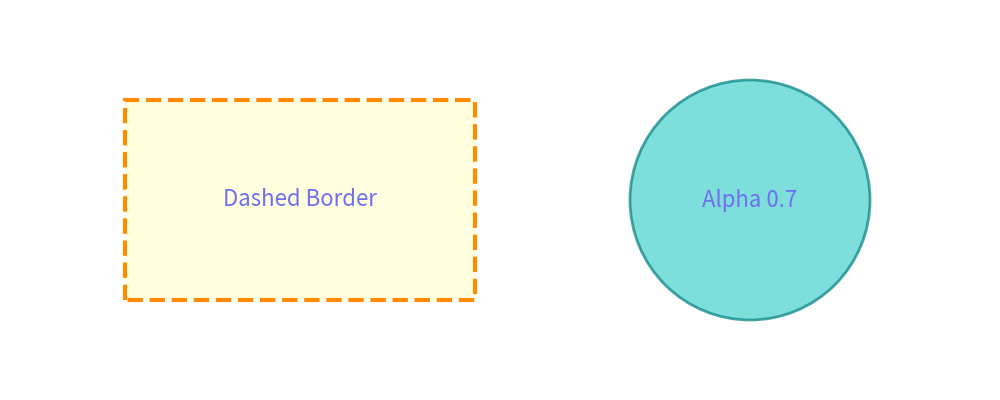

Shapes Guide
Drawlib provides a comprehensive set of shape drawing functions categorized by geometry and positioning model:
- Circle-like Shapes (
xy,radius):circle(),donuts(),fan(),regularpolygon(),star(),wedge() - Rectangle-like Shapes (
xy,width,height):rectangle(),ellipse(),triangle(),chevron(),trapezoid(),rhombus(),parallelogram(),arc() - Directed & Multi-Point Shapes:
arrow(),polygon()
1. Circle-like Shapes
Circle-like shapes take xy as center coordinates and a radius parameter.
Available Functions
circle(xy, radius): Standard circle.donuts(xy, radius, width): Ring shape with outerradiusand ring thicknesswidth.fan(xy, radius, from_angle, to_angle): Sector of a circle spanningfrom_angletoto_angle.regularpolygon(xy, radius, num_vertices): Regular polygon with $N$ vertices (triangles, pentagons, hexagons, octagons).star(xy, radius_ext, radius_int, num_vertices): Multi-point star with inner/outer radii.wedge(xy, radius, width, from_angle, to_angle): Combined donut sector with inner/outer radii and angles.
from drawlib.canvas import config
from drawlib.colors import Colors140
from drawlib.shapes import circle, donuts, fan, regularpolygon, star
from drawlib.types import ShapeStyle
config(width=150, height=60)
# Circle
circle(
xy=(20, 30),
radius=12,
style=ShapeStyle(fill_color=Colors140.LightSkyBlue, line_color=Colors140.SteelBlue, line_width=2),
text="Circle"
)
# Donuts
donuts(
xy=(50, 30),
radius=12,
width=4,
style=ShapeStyle(fill_color=Colors140.Plum, line_color=Colors140.Purple, line_width=2),
text="Donut"
)
# Regular Polygon (Hexagon)
regularpolygon(
xy=(80, 30),
radius=12,
num_vertex=6,
style=ShapeStyle(fill_color=Colors140.MediumSpringGreen, line_color=Colors140.SeaGreen, line_width=2),
text="Hexagon"
)
# Star
star(
xy=(110, 30),
radius_ext=12,
radius_int=6,
num_vertex=5,
style=ShapeStyle(fill_color=Colors140.Gold, line_color=Colors140.DarkGoldenRod, line_width=2),
text="Star"
)

2. Rectangle-like Shapes
Rectangle-like shapes take xy as center coordinates, width, height, and an optional rotation angle.
Available Functions
rectangle(xy, width, height): Standard rectangle.ellipse(xy, width, height): Ellipse defined by bounding width and height.triangle(xy, width, height): Isosceles triangle.chevron(xy, width, height): Arrowhead/chevron block.trapezoid(xy, width, height): Trapezoid shape.rhombus(xy, width, height): Diamond / rhombus shape.parallelogram(xy, width, height): Slanted parallelogram.
from drawlib.canvas import config
from drawlib.colors import Colors140
from drawlib.shapes import chevron, ellipse, parallelogram, rectangle, rhombus, triangle
from drawlib.types import ShapeStyle
config(width=160, height=60)
# Rectangle
rectangle(
xy=(20, 30),
width=24,
height=16,
style=ShapeStyle(fill_color=Colors140.AliceBlue, line_color=Colors140.DodgerBlue, line_width=2),
text="Rect"
)
# Ellipse
ellipse(
xy=(50, 30),
width=24,
height=16,
style=ShapeStyle(fill_color=Colors140.MistyRose, line_color=Colors140.Crimson, line_width=2),
text="Ellipse"
)
# Triangle
triangle(
xy=(80, 30),
width=24,
height=20,
style=ShapeStyle(fill_color=Colors140.LemonChiffon, line_color=Colors140.GoldenRod, line_width=2),
text="Tri"
)
# Rhombus
rhombus(
xy=(110, 30),
width=22,
height=22,
style=ShapeStyle(fill_color=Colors140.HoneyDew, line_color=Colors140.ForestGreen, line_width=2),
text="Diamond"
)
# Chevron
chevron(
xy=(140, 30),
width=20,
height=16,
corner_angle=45,
style=ShapeStyle(fill_color=Colors140.Lavender, line_color=Colors140.DarkOrchid, line_width=2),
text="Chevron"
)

3. Directed Arrows (arrow)
The arrow() function draws a thick block arrow from point xy1 to point xy2.
from drawlib.canvas import config
from drawlib.colors import Colors140
from drawlib.shapes import arrow
from drawlib.types import ShapeStyle
config(width=100, height=40)
arrow(
xy1=(10, 20),
xy2=(90, 20),
tail_width=4,
head_width=10,
head_length=12,
style=ShapeStyle(fill_color=Colors140.DodgerBlue, line_color=Colors140.MidnightBlue, line_width=2),
text="Process Flow"
)

4. Multi-Point Polygons (polygon)
The polygon() function connects a sequence of (x, y) coordinate points xys and fills the interior.
from drawlib.canvas import config
from drawlib.colors import Colors140
from drawlib.shapes import polygon
from drawlib.types import ShapeStyle
config(width=100, height=50)
polygon(
xys=[(20, 10), (80, 10), (90, 40), (50, 45), (10, 30)],
style=ShapeStyle(fill_color=Colors140.LightCoral, line_color=Colors140.FireBrick, line_width=2),
text="Custom Polygon"
)

5. Shape Styling (ShapeStyle)
Shape appearance is configured using ShapeStyle:
fill_color: Interior color.line_color: Border line color.line_width: Border line thickness.line_style:"solid","dashed","dotted","dashdot".alpha: Opacity (0.0to1.0).
from drawlib.canvas import config
from drawlib.colors import Colors140
from drawlib.shapes import circle, rectangle
from drawlib.types import ShapeStyle
config(width=100, height=40)
rectangle(
xy=(30, 20),
width=35,
height=20,
style=ShapeStyle(
fill_color=Colors140.LightYellow,
line_color=Colors140.DarkOrange,
line_width=3,
line_style="dashed"
),
text="Dashed Border"
)
circle(
xy=(75, 20),
radius=12,
style=ShapeStyle(
fill_color=Colors140.MediumTurquoise,
line_color=Colors140.Teal,
line_width=2,
fill_alpha=0.7
),
text="Alpha 0.7"
)
